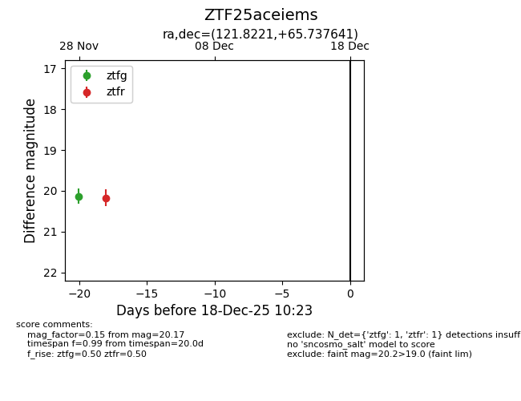
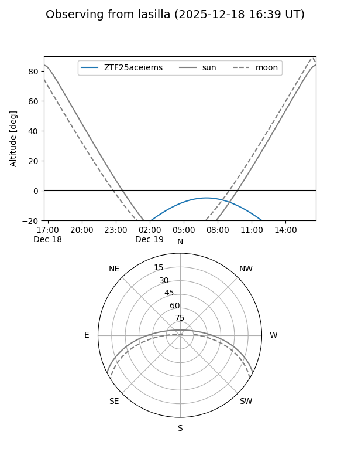
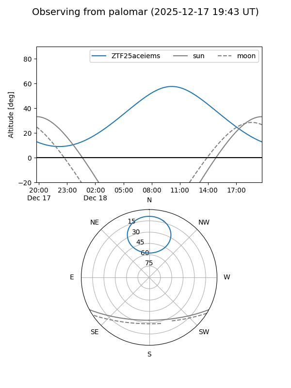

ZTF25aceiems
Target ZTF25aceiems at 2025-12-18 11:17
Aliases and brokers:
FINK: fink-portal.org/ZTF25aceiems
Lasair: lasair-ztf.lsst.ac.uk/objects/ZTF25aceiems
ALeRCE: alerce.online/object/ZTF25aceiems
alt names
ZTF25aceiems (ztf,fink_ztf)
Coordinates:
equatorial (ra, dec) = 121.8221,+65.73764
equatorial (HMS+DMS) = 08:07:17.31,+65:44:15.51
galactic (l, b) = (150.3077,+32.31315)
Photometry
last ztfg=20.13, ztfr=20.17
1 ztfg, 1 ztfr detections
Lightcurve

Visibility


Additional plots